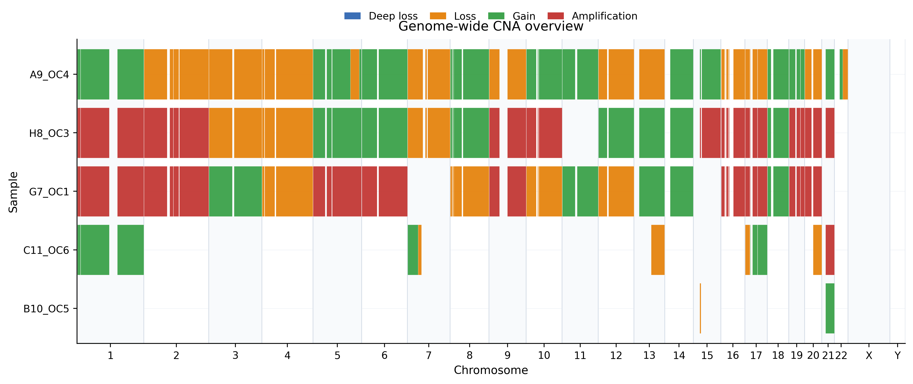
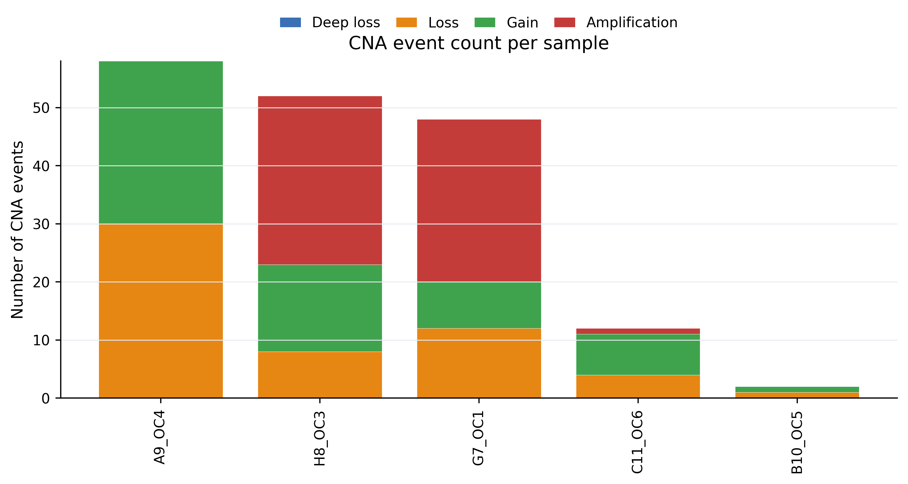
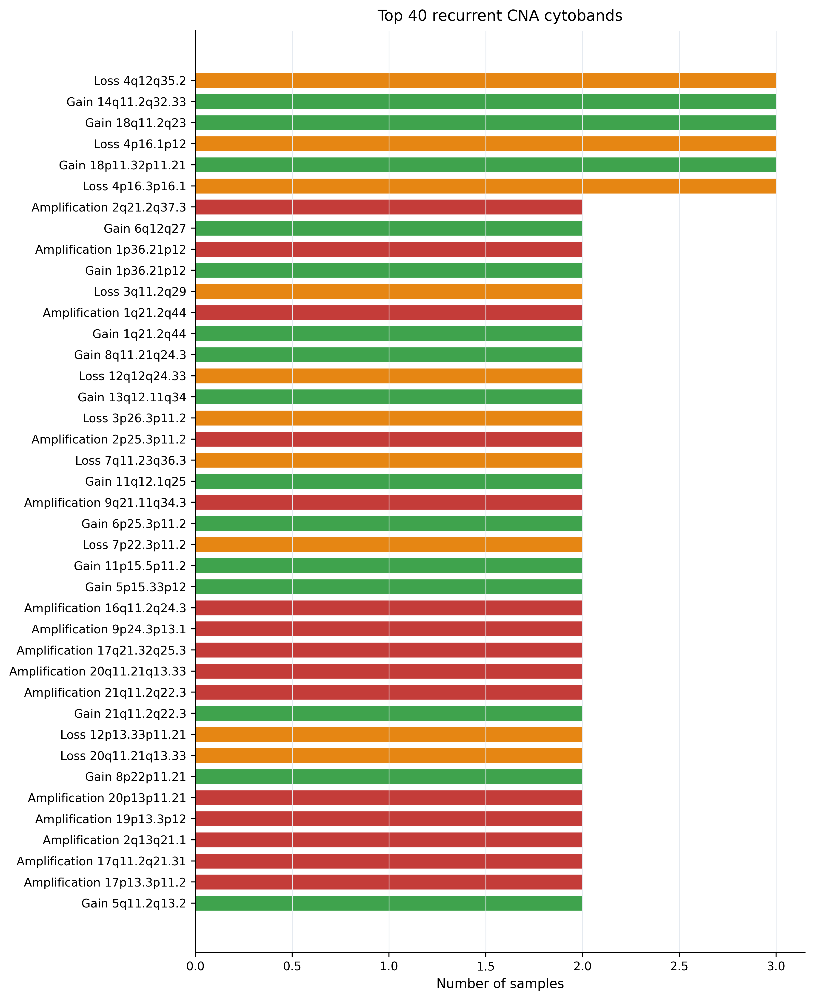

Tutorial: Reproducing the ONT and Illumina Test Runs¶
This tutorial walks through the two validation runs used while packaging OncoTracer:
- an ONT run starting from existing SAMURAI/ichorCNA outputs;
- an Illumina run starting from existing SAMURAI/qDNAseq outputs and BAM files.
The goal is to show new users what a real run looks like, which YAML fields must be edited, which command was used, and which outputs should appear when the workflow succeeds.
Note
These examples use local development paths from the workstation where OncoTracer was packaged. When you run OncoTracer on another machine, replace all /media/server/STORAGE/LPWGS_2025/... paths with your own paths.
Tutorial Dataset Summary¶
| Run | Mode | Starting point | Bin size | Classifier in validation command | Result folder |
|---|---|---|---|---|---|
| ONT existing-output test | ont |
existing ONT ichorCNA + BAMs | 500 kb | false | lpwgs_samurai_cna_nf_ONT_existing_test |
| Illumina test | illumina |
qDNAseq/SAMURAI + BAMs | 100 kb | false | lpwgs_samurai_cna_nf_illumina_test |
These validation commands intentionally used --run_cna_classifier false so the tutorial focuses first on the core reproducible CNA workflow:
02_bam_refinement -> 03_cna_codification -> 04_cna_custom_plots -> 06_workflow_summary
After this succeeds, users can enable --run_cna_classifier true to generate classification, literature reports, and pathology concordance.
Before Running¶
Start in the repository folder:
cd /media/server/STORAGE/LPWGS_2025/lpwgs_samurai_cna_nf
For a GitHub clone this would usually be:
cd OncoTracer
Check that Nextflow is available:
nextflow -version
Use -resume for all tutorial commands. It lets Nextflow reuse completed processes after interruptions.
ONT Tutorial Run¶
ONT Input Files Used¶
This ONT tutorial starts from existing SAMURAI/ichorCNA output, so it does not rerun barcode FASTQ processing.
The YAML file used was:
params/ont.from_existing_samurai.example.yml
The important fields were:
mode: ont
outdir: /media/server/STORAGE/LPWGS_2025/CNA_analyses/lpwgs_samurai_cna_nf_ONT_existing_test
ont_ichor_dir: /media/server/STORAGE/LPWGS_2025/ONT_analyses/ONCO01_06_ONT_liquid_ichorcna_localPoN_18_06_2026/results/ichorcna
ont_bam_dir: /media/server/STORAGE/LPWGS_2025/ONT_analyses/ONCO01_06_ONT_liquid_ichorcna_localPoN_18_06_2026/bam
ont_prior_seg: /media/server/STORAGE/LPWGS_2025/ONT_analyses/ONCO01_06_ONT_liquid_ichorcna_localPoN_18_06_2026/results/ichorcna/segments_logR_corrected_gistic.seg
ont_binsize_kb: 500
run_cna_classifier: false
force: true
What Each ONT YAML Field Means¶
| Field | Meaning |
|---|---|
mode: ont |
Selects the ONT branch of the workflow. |
outdir |
Folder where OncoTracer writes all numbered output stages. |
ont_ichor_dir |
Existing ichorCNA result directory from the ONT analysis. |
ont_bam_dir |
Folder containing ONT BAM files. |
ont_prior_seg |
Prior segment table used as input to BAM boundary refinement. |
ont_binsize_kb |
Coarse CNA bin size used by the prior ONT analysis. This run used 500 kb. |
run_cna_classifier |
false means stop after custom plots. Change to true for reports/classification. |
force |
Allows the underlying scripts to overwrite/recompute outputs. |
ONT Command Used¶
nextflow run main.nf \
-profile local \
-params-file params/ont.from_existing_samurai.example.yml \
--run_cna_classifier false \
-resume
The observed Nextflow run name was:
confident_keller
ONT Outputs Observed¶
The workflow summary reported:
mode=ont
dataset=ONT_ichorcna_500kb
outdir=/media/server/STORAGE/LPWGS_2025/CNA_analyses/lpwgs_samurai_cna_nf_ONT_existing_test
bam_refinement=/media/server/STORAGE/LPWGS_2025/CNA_analyses/lpwgs_samurai_cna_nf_ONT_existing_test/02_bam_refinement/ONT_ichorcna_500kb
cna_codification=/media/server/STORAGE/LPWGS_2025/CNA_analyses/lpwgs_samurai_cna_nf_ONT_existing_test/03_cna_codification
cna_events=/media/server/STORAGE/LPWGS_2025/CNA_analyses/lpwgs_samurai_cna_nf_ONT_existing_test/03_cna_codification/cna_events.tsv
cna_custom_plots=/media/server/STORAGE/LPWGS_2025/CNA_analyses/lpwgs_samurai_cna_nf_ONT_existing_test/04_cna_custom_plots
cna_notation=/media/server/STORAGE/LPWGS_2025/CNA_analyses/lpwgs_samurai_cna_nf_ONT_existing_test/03_cna_codification/cna_cytogenomic_notation.tsv
Observed table sizes:
| File | Lines including header |
|---|---|
03_cna_codification/cna_events.tsv |
173 |
03_cna_codification/cna_cytogenomic_notation.tsv |
6 |
ONT Figures¶
Genome overview:

Event counts by sample:

Recurrent cytobands:

Illumina Tutorial Run¶
Illumina Input Files Used¶
The Illumina run starts from existing SAMURAI/qDNAseq output and aligned BAM files.
The YAML file used was:
params/illumina.example.yml
The important fields were:
mode: illumina
outdir: /media/server/STORAGE/LPWGS_2025/CNA_analyses/lpwgs_samurai_cna_nf_illumina_test
illumina_qdnaseq_dir: /media/server/STORAGE/LPWGS_2025/samurai_results_100kb/qdnaseq
illumina_bam_dir: /media/server/STORAGE/LPWGS_2025/samurai_results_100kb/alignment
illumina_prior_seg: /media/server/STORAGE/LPWGS_2025/samurai_results_100kb/qdnaseq/all_segments.seg
illumina_binsize_kb: 100
run_cna_classifier: false
pathology_csv: null
pathology_sample_col: illumina_sample_id
pathology_case_col: case_code
pathology_diagnosis_col: final_diagnosis
pathology_use_biomed_models: true
pathology_biomed_local_files_only: false
force: true
What Each Illumina YAML Field Means¶
| Field | Meaning |
|---|---|
mode: illumina |
Selects the Illumina branch. |
outdir |
Folder where all numbered output stages are written. |
illumina_qdnaseq_dir |
qDNAseq/SAMURAI CNA output directory. |
illumina_bam_dir |
Directory containing aligned Illumina BAM files. |
illumina_prior_seg |
Prior segmentation table, usually all_segments.seg. |
illumina_binsize_kb |
Coarse bin size used by qDNAseq/SAMURAI. This run used 100 kb. |
run_cna_classifier |
false for this core tutorial. Set to true for reports/classification. |
pathology_csv |
Optional pathology table. null disables pathology matching. |
pathology_sample_col |
Pathology table column matching CNA sample IDs. |
pathology_case_col |
Pathology case/accession column. |
pathology_diagnosis_col |
Pathology diagnosis column. |
pathology_use_biomed_models |
Whether to attempt optional biomedical transformer scoring if pathology is provided. |
pathology_biomed_local_files_only |
If true, only cached Hugging Face models are used. |
force |
Allows recomputation/overwrite behavior in underlying scripts. |
Illumina Command Used¶
nextflow run main.nf \
-profile local \
-params-file params/illumina.example.yml \
--run_cna_classifier false \
-resume
The observed Nextflow run name was:
curious_bernard
Illumina Outputs Observed¶
The workflow summary reported:
mode=illumina
dataset=illumina_qdnaseq_100kb
outdir=/media/server/STORAGE/LPWGS_2025/CNA_analyses/lpwgs_samurai_cna_nf_illumina_test
bam_refinement=/media/server/STORAGE/LPWGS_2025/CNA_analyses/lpwgs_samurai_cna_nf_illumina_test/02_bam_refinement/illumina_qdnaseq_100kb
cna_codification=/media/server/STORAGE/LPWGS_2025/CNA_analyses/lpwgs_samurai_cna_nf_illumina_test/03_cna_codification
cna_events=/media/server/STORAGE/LPWGS_2025/CNA_analyses/lpwgs_samurai_cna_nf_illumina_test/03_cna_codification/cna_events.tsv
cna_custom_plots=/media/server/STORAGE/LPWGS_2025/CNA_analyses/lpwgs_samurai_cna_nf_illumina_test/04_cna_custom_plots
cna_notation=/media/server/STORAGE/LPWGS_2025/CNA_analyses/lpwgs_samurai_cna_nf_illumina_test/03_cna_codification/cna_cytogenomic_notation.tsv
Observed table sizes:
| File | Lines including header |
|---|---|
03_cna_codification/cna_events.tsv |
214 |
03_cna_codification/cna_cytogenomic_notation.tsv |
27 |
Illumina Figures¶
Genome overview:

Event counts by sample:

Recurrent cytobands:

Enabling Reports and Pathology After The Tutorial¶
After a core run succeeds, enable the classifier:
nextflow run main.nf \
-profile local \
-params-file params/illumina.example.yml \
--run_cna_classifier true \
-resume
To add pathology benchmarking:
nextflow run main.nf \
-profile local \
-params-file params/illumina.example.yml \
--run_cna_classifier true \
--pathology_csv /media/server/STORAGE/LPWGS_2025/complete_biopsy_database_sanitized.csv \
--pathology_sample_col illumina_sample_id \
--pathology_case_col case_code \
--pathology_diagnosis_col final_diagnosis \
-resume
This adds:
05_cna_classifier/03_report/pdf_reports/
05_cna_classifier/03_report/clinician_reports/
05_cna_classifier/06_knowledge/
05_cna_classifier/07_pathology/
What A Successful Core Run Looks Like¶
For non-familiar users, check these files first:
06_workflow_summary/workflow_summary.txt
03_cna_codification/cna_events.tsv
03_cna_codification/cna_cytogenomic_notation.tsv
04_cna_custom_plots/cna_genome_overview.pdf
04_cna_custom_plots/cna_per_sample_pages.pdf
04_cna_custom_plots/cna_log2_ratio_profiles_all_samples.pdf
If these files exist and are non-empty, the core CNA analysis completed.
How To Adapt This Tutorial To Your Data¶
- Pick the closest YAML example.
- Copy it to a new file.
- Replace only the input/output paths first.
- Keep bin sizes at the defaults unless your upstream SAMURAI/qDNAseq/ichorCNA run used different bin sizes.
- Run with
--run_cna_classifier falsefirst. - Confirm
03_cna_codificationand04_cna_custom_plotsare populated. - Re-run with
--run_cna_classifier trueif you want reports and pathology concordance.